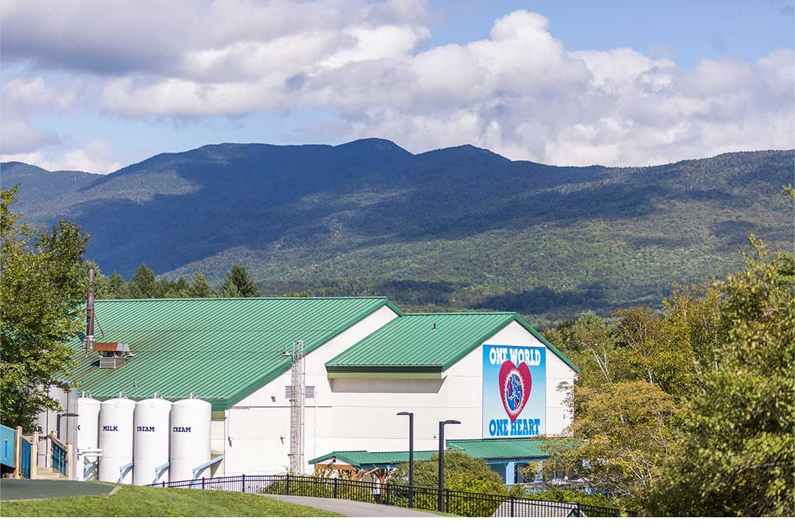
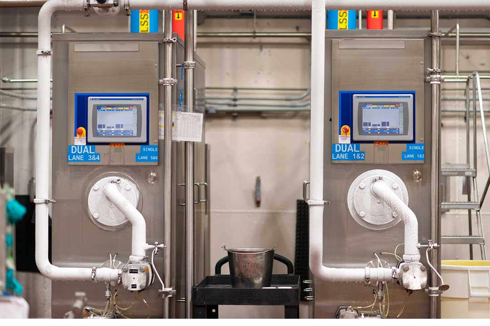
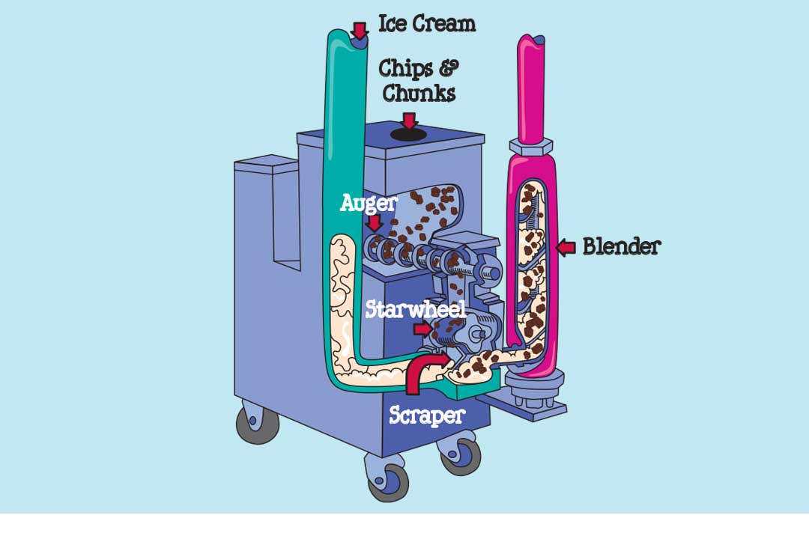
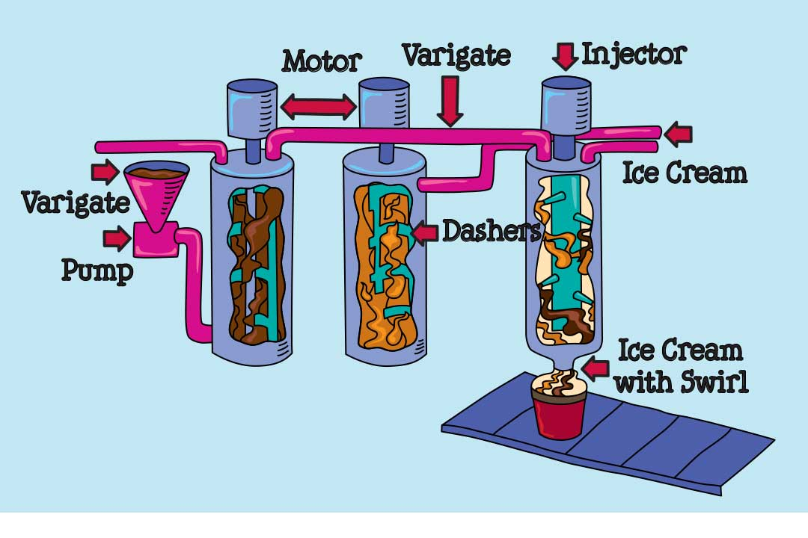
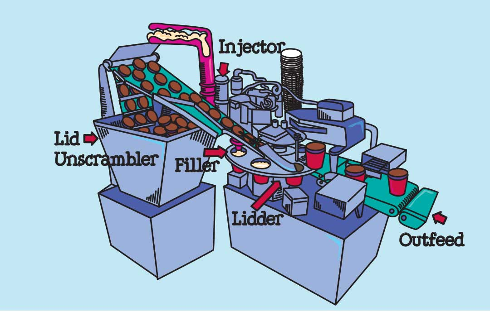
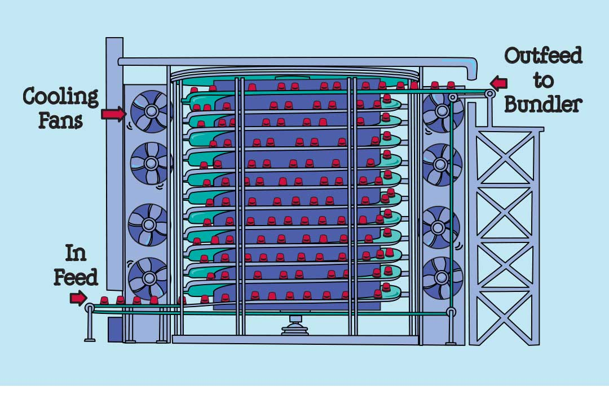
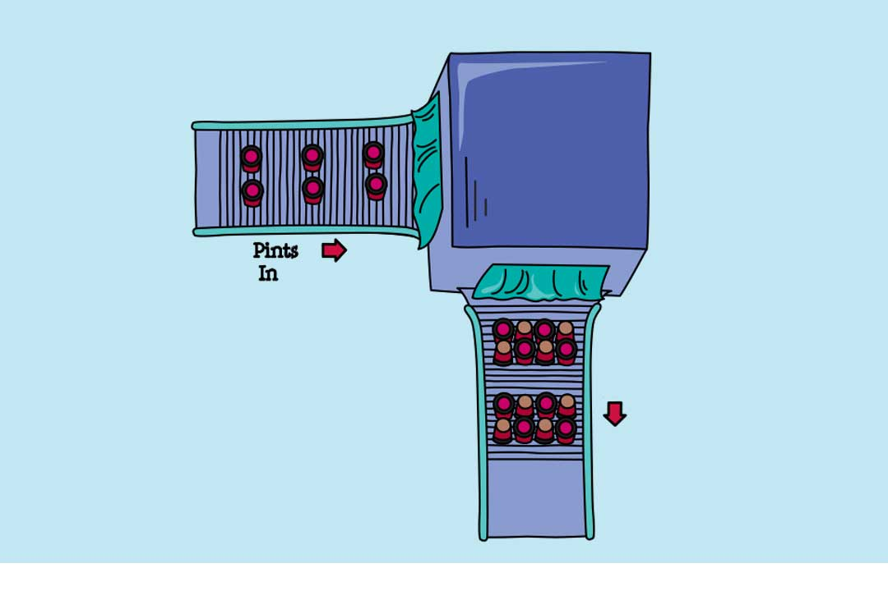

Ben & Jerry's staat bekend om onze heerlijke smaken vol chunks en swirls en gemaakt met (h)eerlijke ingrediënten. Maar weet je wat er allemaal komt kijken bij het maken van ijs?
Ons 13-stappenproces:
1. Van de boederijen
2. Naar de fabriek
3. De mengtank
4. Gepasteuriseerd en gehomogeniseerd
5. De smaakvatten
6. De vriezer
7. De chunkfeeder
8. De contherm en variegator
9. De automatische vuller
10. Spiraalverharder
11. De bundelmachine
12. Kwaliteitsborging
13. Bestemming: overal
1. Van de boederijen
Het begint natuurlijk allemaal met de koe. Niet slechts één, maar tienduizenden; van de honderden lokale boerderijen die hun rauwe melk verkopen tot de zuivelfabriek. In de zuivelfabriek wordt de melk gescheiden in slagroom en gecondenseerde magere melk, en vervolgens per tankwagen vervoerd naar de fabrieken waar ons ijs wordt gemaakt.
2. Naar de fabriek
Wanneer de tankwagens in de fabriek aankomen, worden de melk en de room in vier opslagsilo's van bijna 23.000 liter gepompt en koel gehouden op 2°C totdat we klaar zijn om er Ben & Jerry’s-ijs van te maken.

3. De mengtank
In het totale ijsproductieschema is het maken van de mix (en het zo voortreffelijk mogelijk maken ervan) misschien wel het belangrijkste onderdeel van het hele proces. Een zeer vaardige en ervaren persoon die bekend staat als de Mixmeester voert mengprocedures uit bij de mengtank, onze roestvrijstalen megablender van bijna 4.000 liter.
Een partij ijsmix begint met slagroom, gecondenseerde magere melk en vloeibare rietsuiker. Aan deze ingrediënten voegt de Mixmeester ook eigeel, cacaopoeder voor onze chocoladesmaken en natuurlijke stabilisatoren toe die warmteschok en de vorming van ijskristallen helpen voorkomen.
Alle ingrediënten worden gedurende 6 tot 8 minuten gemengd, wat resulteert in een witte mix van zoete room of een chocolademix.
Het resulterende mengsel wordt vervolgens via een van de twee filters overgebracht naar de buffertank. In de buffertank wordt het mengsel opgeslagen totdat het klaar is voor het pasteurisatieproces.
4. Gepasteuriseerd en gehomogeniseerd
Nadat de ijsmix is gemengd, is hij klaar om gepasteuriseerd en gehomogeniseerd te worden. Pasteurisatie is het proces waarbij het mengsel wordt verwarmd om schadelijke bacteriën te doden. De pasteuriseermachine bestaat uit een reeks zeer dunne roestvrijstalen platen. Heet water (83°C) stroomt aan de ene kant van de platen, en als het koude mengsel (2°C) aan de andere kant van de platen wordt doorgepompt, wordt warmte van het hete water overgebracht naar het mengsel, waardoor het wordt opgewarmd tot 82°C.
Voordat de mix de kans krijgt om af te koelen, komt hij in de homogenisator terecht. Daar wordt de mix onder hoge druk (ongeveer 140 kg/cm²) door een zeer kleine opening geperst zodat de vetdeeltjes van de room zo fijn verdeeld en geëmulgeerd worden dat ze niet van de rest van de mix scheiden. De homogenisator werkt als een zuigerpomp: de mix wordt bij de neergaande slag in de cilinder gezogen en bij de opgaande slag onder zeer hoge druk naar buiten geperst.
De gekoelde mix wordt vervolgens naar de tankkamer gepompt (een ruimte van 2°C met zes opslagtanks van bijna 19.000 liter), waar hij 4 tot 8 uur lang wordt bewaard om de ingrediënten te laten vermengen (het is net alsof je een saus laat sudderen of een goede wijn laat ademen - we willen het gewoon niet overhaasten!).
5. De smaakvatten
Een van de redenen waarom Ben & Jerry's-ijs zo goed is, kan met één woord worden samengevat: smaak. We nemen onze smaken (en onze smaaktechnieken) bijzonder serieus. De mensen die met de smaakvatten werken, zijn experts in de kunst van het aromatiseren, en alleen de beste smaakingrediënten mogen vermengd worden met een smaakvat vol met onze ijsmix.
Zodra het mengsel heeft ‘gesudderd’, wordt het vanuit de tankkamer naar de smaakvaten gepompt: een reeks roestvrijstalen vaten met elk ruimte voor bijna 2.000 liter van de mix. Hier wordt de mix getransformeerd van praktisch smakeloos naar euforisch smaakvol dankzij de toevoeging van een ongelooflijke reeks smaakstoffen, purees en extracten, zoals vanille, pure pepermunt, fruitextracten, bananenpuree en af en toe zelfs enkele likeuren.
6. De vriezer
Zodra de juiste hoeveelheid smaakstoffen is toegevoegd, wordt de mix naar de vriezer gepompt. De vriezers in onze fabriek in Waterbury maken gebruik van vloeibare ammoniak als vriesmiddel (-4°C) en kunnen meer dan 2.500 liter van de mix per uur bevriezen.
Zo werkt het: de mix wordt door een lange, ijskoude cilinder gepompt die bekend staat als het vat. Naarmate de mix aan de wand van het vat bevriest, wordt het weggeschraapt door draaiende messen. Als het aan de voorkant van het vat komt, is het niet langer een mengsel: het is ijs!
De mix gaat de vriezer in bij 2°C en komt eruit bij -5°C. Dat is dezelfde temperatuur en consistentie als softijs of ‘creemee’, zoals het in Vermont wordt genoemd.

7. De chunkfeeder
Nadat we de mix hebben bevroren tot een lekker romige -5°C, hebben we de keuze: als we alleen maar smaken zonder chunks maken, zoals vanille of chocolade, wordt het ijs rechtstreeks naar de bekervulmachine gepompt, maar als we smaken met chunks maken, gaat het ijs eerst gaat door de chunkfeeder.
Vóór Ben & Jerry’s was fruit het enige dat ijsmakers ooit in hun ijs stopten. Daarom wordt de machine die chunks aan ons ijs toevoegt eigenlijk een ‘fruit-feeder’ genoemd. Maar als je bedenkt met hoeveel andere traktaties we de feeder nog meer kunnen vullen, van klodders chocoladekoekdeeg tot toffee-achtige brownies, en van koekjes en snoepjes tot noten en alles daartussenin, is het niet gek dat we hem een andere naam hebben gegeven!
Simpel gezegd voegt de chunkfeeder chunks toe aan de stroom van ijs. De chunks worden aan de bovenkant in de trechter van de chunkfeeder geladen en aan de onderkant stuurt een avegaar een gestage stroom chunks naar een sterwiel. Terwijl het sterwiel draait, duwt het de chunks in de stroom bevroren ijs die door de feeder stroomt. Het ijs met chunks gaat uiteindelijk door een speciale blender, dat de chunks door de stroom van ijs mengt en zo een gelijkmatige verdeling garandeert.

8. De contherm en variegator
Heb je je ooit afgevraagd hoe we die dikke, rijke swirls zo mooi door een beker ijs laten rondwervelen? Het chique woord voor ‘swirl’ is ‘variant’ en of het nu fudge, karamel, pindakaas, marshmallow of fruit is, we gebruiken altijd de beste en fantasierijkste varianten die we kunnen vinden. Maar die geweldige varianten zouden nooit hun weg kunnen vinden naar een beker van ons ijs zonder een geweldig variantgeleidingssysteem.
Gelukkig hebben we toevallig het beste variantgeleidingssysteem dat er is!
Zo werkt het:
• Varianten gaan eerst door de contherm, waardoor hun temperatuur net genoeg daalt om te voorkomen dat ze zich ophopen (wat geen goede zaak is).
• Goed gekoelde varianten gaan door de variegator, die ze in wezen in de stroom van ijs injecteert (wat een hele goede zaak is wanneer het naar behoren werkt en een hele rommelige zaak wanneer dat niet zo is).

9. De automatische vuller
Nadat de chunks en de swirls zijn toegevoegd, is het ijs klaar om in bekers te worden gedaan. Dit wordt gedaan met een verbazingwekkende machine: de automatische vuller.
De automatische vuller vult niet alleen ongeveer 120 bekers per minuut, maar voert ook taken uit die aan het vullen voorafgaan, zoals het twee-aan-twee in perfecte positie zetten van de bekers, zodat de vulkop ze kan vullen.
Bovendien begeleidt de vuller de gevulde bekers naar de bedekselaar, die de deksels netjes op de bekers plaatst en aanduwt.
Ten slotte tilt een vernuftige bekeroptiller de bekers uit de bedekselaar, waarna een kleine hefboom ze op een transportband duwt, op weg naar de volgende stap in het proces.

10. Spiraalverharder
Voordat het verpakte ijs kan worden bewaard of verzonden, moet het verder worden ingevroren: van de halfbevroren temperatuur van -5°C tot een volledig bevroren vaste vorm van ten minste -12°C. Het proces wordt ‘verharding’ genoemd en vindt plaats in de spiraalverharder.
De bekers reizen met een transportband vanuit onze productieruimte naar de spiraalverhardingstunnel, een megatransportband met twee verdiepingen in de vorm van een kurkentrekker, letterlijk het coolste in de hele fabriek.
De werkelijke temperatuur in de spiraalverhardingstunnel is -1°C, maar enorme ventilatoren in de tunnel creëren een gevoelstemperatuur van -15°C. In deze arctische omgeving bewegen de bekers drie uur lang langzaam de spiraalvormige transportband op. Wanneer ze de top bereiken, is hun temperatuur gedaald van -5°C (de consistentie van softijs) tot -12°C (volledig bevroren vaste consistentie!)

11. De bundelmachine
Nadat de ijsbekers bevroren zijn, verpakken we ze voor verzending. Eerst draait een omvormer elke tweede ijsbeker ondersteboven. Dan zorgt een vriezermedewerker ervoor dat 8 bekers (2 evenwijdige rijen van 4 bekers, waarbij elke tweede beker is omgekeerd) op de juiste manier samengevoegd zijn om de bundelmachine in te gaan. De bundelmachine is een warmtetunnel die plastic rond de bundel van 8 bekers wikkelt. Het gebundelde pakket van 8 wordt een ‘koker’ genoemd en elke koker is gelijk aan bijna 3,8 liter ijs. Vriezermedewerkers stapelen de kokers op verzendpallets die vervolgens bij -29°C worden opgeslagen in ons magazijn in afwachting van verzending.

12. Kwaliteitsborging
Ondertussen zijn de QA-medewerkers in ons Quality Assurance-lab fanatici als het gaat om het garanderen dat elke smaak van Ben & Jerry's-ijs voldoet aan onze strenge kwaliteitsnormen.
Elke Ben & Jerry’s-productierun die ze goedkeuren, geeft onze ijsverkeersleiders de cruciale toestemming die ze nodig hebben om Ben & Jerry’s-producten naar hun eindbestemming te verschepen …
13. Bestemming: overal
Onze definitie van ‘overal’ breidt zich ieder jaar verder uit!
De producten van Ben & Jerry's worden landelijk en wereldwijd gedistribueerd in supermarkten, buurtwinkels, restaurants, bioscopen en andere ijsvriendelijke locaties. En als het gaat om ijsvriendelijke locaties, zijn we natuurlijk van mening dat Scoop Shops van Ben & Jerry's verreweg het meest ijsvriendelijk zijn!